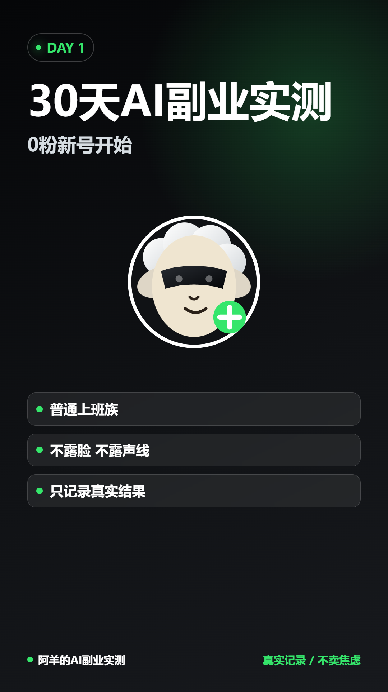

本地商家
AI 内容助手
用途：把一个菜品拆成朋友圈、小红书、短视频脚本和促销文案，解决商家不会持续发内容的问题。
下一步：选 3 家本地餐饮店，做免费样板。
AI 实战作品集 / Lesson 1
这里展示目前最重要的三条线：本地商家 AI 内容助手、阿羊 AI 实测号、Codex 学习训练营。 目标不是堆概念，而是把每一次练习沉淀成可展示、可复用、可继续修改的作品。

每个项目都对应一个真实任务：做样板、发内容、学工具。后续可以继续扩展成网页、PPT、视频素材包或 GitHub 项目。
用途：把一个菜品拆成朋友圈、小红书、短视频脚本和促销文案，解决商家不会持续发内容的问题。
下一步：选 3 家本地餐饮店，做免费样板。
用途：用 AI 羊形象、不露脸、不露声线，记录 30 天 AI 工具实战过程。
下一步：用已有封面、分镜和配音稿剪出第 1 条。
用途：学习如何让 Codex 生成网页、整理资料、制作文档、调用插件、发布作品。
下一步：把本页发布成第一个作品展示页。
这不是网页课，而是 Codex 协作课。你要学会把一句模糊需求变成文件、页面、预览和下一步行动。
你只需要给出主题和用途，Codex 帮你拆成结构、内容和交付形式。
先复用你已经做过的封面、文档和样板，让作品更真实。
把项目定位、作品说明、学习路线写进一个可打开的网页。
用浏览器检查显示效果，再根据你的意见继续调整。
你要从“问问题”升级到“发任务”。以后可以这样说： 帮我做一个作品展示页、帮我把这个网页发布到 GitHub、帮我把这个流程封装成 skill。 Codex 会负责拆任务、改文件、预览、验证和复盘。